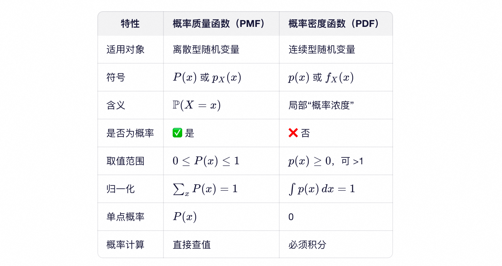
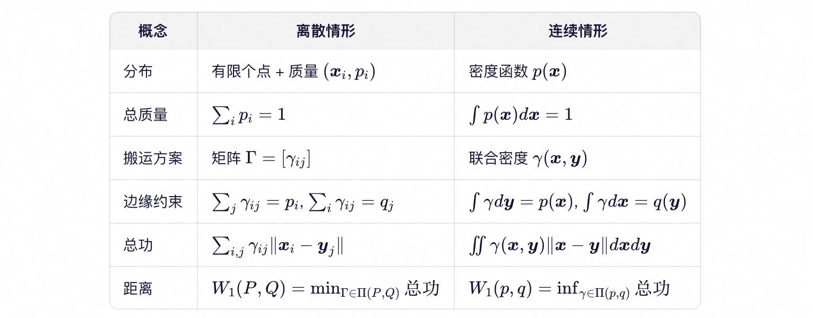
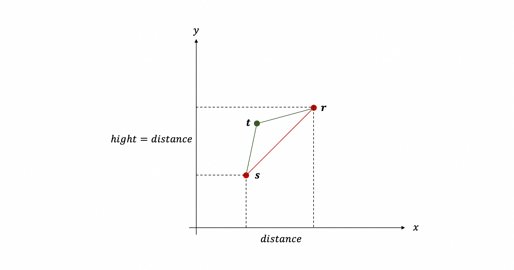

生成对抗网络（Generative Adversarial Network）原理。
问题描述 (1)
目标是通过机器学习方法生成“真实人脸图像”。当然，生成的图像不太可能是真实人脸图像，这里“真实”指具有自然摄影风格的人脸（区别于卡通、素描或抽象艺术等非写实风格），图像尺寸为 $100 \times 100$ 的 RGB 图像。
将每张图像视为 $\mathbb{R}^{30000}$ 空间中的一个点（因为 $3 \times 100 \times 100 = 30000$ 个像素），那么：
- 这个空间内绝大多数区域都不是“图像”（绝大多数点都不对应人类可识别的自然图像），虽然任意点在技术上都可以被解释为一个 $100 \times 100$ 的 RGB 图像；
- 所有“真实人脸图像”并非均匀散布在整个 $\mathbb{R}^{30000}$ 空间中，而是高度集中于某个特定区域；
- 尽管该空间维度极高（30000 维），但真实人脸的变化实际上仅由少量语义因素控制，例如：
- 身份（identity）
- 表情（expression）
- 光照条件（illumination）
- 头部姿态（pose）
- 年龄、性别等高层属性
这些因素共同构成了一个远低于 30000 维的隐含自由度空间（通常估计在几十到几百维之间）。因此，所有合理的真实人脸图像实际上嵌入在一个光滑的低维子流形（low-dimensional manifold）上。
类似地，所有“真实猫的图像”也会集中在 $\mathbb{R}^{30000}$ 中另一个不同的低维子流形上。
由于人脸与猫在语义和视觉结构上差异巨大，这两个流形在高维空间中几乎不相交（disjoint supports），对应的概率分布 $p_{face}(\boldsymbol{x})$ 与 $p_{cat}(\boldsymbol{x})$ 高度不重叠。
这一观点在机器学习中被称为流形假设（Manifold Hypothesis）：
自然数据（如图像、语音、文本）虽然表示在高维观测空间中，但其本质结构存在于一个低维、非线性的潜在流形上。
该假设是现代生成模型（如 GAN、VAE、扩散模型）得以成功的关键理论基础——它们的目标正是学习并逼近这个隐藏的低维数据流形。
人脸图像在 $\mathbb{R}^{30000}$ 中的概率分布 $P$，概率密度函数为 $p(\boldsymbol{x})$，意思是：$p(\boldsymbol{x})$ 越大，表示在 $\boldsymbol{x}$ 附近的小邻域内出现真实人脸图像的概率越高。若把 $30000$ 维压缩成 $2$ 维，使用 $x$ 轴和 $y$ 轴表示，概率密度 $p(x,y)$ 使用 $z$ 轴表示，那么人脸图像的概率密度函数就是一个曲面，其中绝大多数区域的 $z$ 趋近于 0，因为那些区域几乎不可能包含自然人脸图像。只有在对应于实际人脸图像存在的地方，$z$ 的值才会显著大于 0。
考虑离散场景，把 $\mathbb{R}^{30000}$ 想象成离散点，从中采样一个人脸图像，采到 $\boldsymbol{x}$ 的概率（$\boldsymbol{x} \in \text{对应人脸图像的所有点}$）就是概率质量函数 $P(\boldsymbol{x})$。若把 $30000$ 维压缩成 $2$ 维，使用 $x$ 轴和 $y$ 轴表示，概率质量 $P(x,y)$ 使用 $z$ 轴表示，那么人脸图像的概率质量函数就是一个个点，其中绝大多数点的 $z$ 都为0，少部分点的 $z$ 大于 0 且 小于等于 1，对应真实/合理人脸图像（其实等于 1 也不可能，因为不可能只有 1 张人脸图像）。
基础知识 (2)
概率质量和概率密度 (2.1)
概率论中，用概率分布来描述随机变量的行为。根据随机变量是离散型还是连续型，使用两种不同的工具来刻画其分布：
- 离散型随机变量：概率质量函数（Probability Mass Function, PMF）
- 连续型随机变量：概率密度函数（Probability Density Function, PDF）
虽然名字相似，但它们的数学含义和使用方式有本质区别。
概率质量函数（PMF）——用于离散变量
设 $X$ 是一个离散型随机变量，其可能取值为可数集合 $\mathcal{X} \in {x_1, x_2, \dots}$。
概率质量函数（PMF）是一个函数 $P:\mathcal{X} \to [0,1]$，满足：
$$
P(x) = P(X = x), \quad \forall x \in \mathcal{X}
$$
且
$$
\sum_{x \in \mathcal{X}} P(x) = 1
$$
例子：掷骰子
- 随机变量 $X$：骰子点数 $\mathcal{X} \in {1, 2, 3, 4, 5, 6}$
- PMF：$P(x) = \frac{1}{6}$ 对所有 $x \in \mathcal{X}$
- 解读：$P(X=3) = P(3) = \frac{1}{6}$
直观比喻：“每个点的重量”
- 想象在一条数轴上放几个小砝码；
- 每个砝码的位置是 $x$，重量是 $P(x)$；
- 总重量为 1；
- $P(x)$ 就是“点 $x$ 上的概率质量” —— 这也是“质量函数”名称的由来。
关键性质：
- $P(x)$ 本身就是概率，所以 $0 \leq P(x) \leq 1$
- 可以直接说“$X$ 等于 $x$ 的概率是 $P(x)$”
概率密度函数（PMF）——用于连续变量
设 $X$ 是一个连续型随机变量，其取值在 $\mathbb{R}$（或 $\mathbb{R}^d$）上。
若存在一个非负可积函数 $p: \mathbb{R} \to [0, \infty)$，使得对任意区间 $[a,b]$ 有：
$$
P(a \leq X \leq b) = \int_a^b p(x) dx
$$
则称 $p(x)$ 为 $X$ 的概率密度函数（PDF）。
PDF 满足归一化条件：
$$
\int_{-\infty}^{\infty} p(x) dx = 1
$$
例子：标准正态分布
- PDF：$p(x) = \frac{1}{\sqrt{2\pi}} e^{-x^2/2}$
- 注意：$p(0) \approx 0.4$，但 $P(X = 0) = 0$
- 而 $P(-1 \leq X \leq 1) = \int_{-1}^{1} p(x) dx \approx 0.68$
直观比喻：“人口密度”
- 想象一个国家的人口分布：
- 人口密度（人/平方公里） ↔ 概率密度 $p(x)$
- 某城市的人口总数（$\approx$ 人口密度 $\times$ 城市面积） ↔ 概率 $P(a \leq X \leq b)$
- 不能说“这个经纬度点上有 500 人”（点面积为 0），但可以说“每平方公里有 500 人”
关键性质：
- $p(x)$ 不是概率！它可以大于 1（例如均匀分布 $U(0,0.1)$ 的 PDF 是 10）；
- 只有积分才有概率意义：$P(X \in A) = \int_A p(x) dx$；
- 单点概率恒为零：$P(X=x)=0$。
对比

误区
误区 1：“PDF 在 $x$ 处的值就是 $X=x$ 的概率。”
→ 错误！正确说法：
“PDF 在 $x$ 附近的积分才是概率。”
样本落到区间 $[a, b]$ 的概率，等于 PDF 在区间 $[a, b]$ 上的积分。
想象在 $x$ 附近放一个宽度为 $\Delta x$ 的小盒子，那么样本落入这个盒子的概率 $\approx p(x) \cdot \Delta x$。所以 $p(x)$ 越大，盒子越“拥挤”。
误区 2：“因为 p(x)≤1，所以 PDF 不会超过 1。”
→ 错误！反例：
均匀分布 $X \sim U(0, \varepsilon)$，PDF 为：
$$
p(x) = \begin{cases}
\frac{1}{\varepsilon}, & x \in [0, \varepsilon] \\
0, & \text{otherwise}
\end{cases}
$$
当 $\varepsilon = 0.01$ 时，$p(x) = 100$（在区间 $[0, 0.01]$ 内）。区间 $[0, 0.01]$ 内每个具体的点概率都为0（点没有长度），但 $[0, 0.01]$ 区间上的积分是1。
约定
本文约定
- 大写字母（如 $P$、$Q$）表示概率分布本身（抽象对象）；
- 大写函数（如 $P(x)$、$Q(x)$）表示离散型变量的概率质量函数；
- 小写函数（如 $p(x)$、$q(x)$）表示连续型变量的概率密度函数；
为什么离散情形可以用同一个大写字母 $P$ 同时表示分布本身和质量函数，而连续情形必须区分 $P$（分布本身）和 $p(x)$（概率密度）？
离散情形：语义一致
- 概率分布 $P$ 完全由其在每个点上的概率值决定；
- 而这些概率值就是 $P(x) = P(X=x)$；
- 知道所有 $P(x)$ 就等于知道分布 $P$。
- 因此，用同一个符号 $P$ 表示“分布”和“其质量函数”不会引起歧义，反而体现了一种自然对应：“分布 $P$ 在 $x$ 处的取值就是 $P(x)$”。
- 所以：$P$（分布） ↔ $P(x)$（PMF） 是同一对象的两种视角。
连续情形：语义断裂
- 分布 $P$ 不能通过 $P(x) = P(X=x)$ 来描述，因为 $P(X=x) = 0$ （对所有 $x$ 成立）；
- 必须引入一个辅助函数 $p(x)$（如前文）；
- 这个 $p(x)$ 不是概率，而是密度；它甚至可能不唯一（在测度零集上可任意修改）；
所以，关键区别是：
- 离散：分布 $=$ 点概率的集合 → 分布与 PMF 等价；
- 连续：分布 $\neq$ 密度函数 → 密度只是分布的一个表示工具（且非唯一）。
若仍用 $P(x)$ 表示密度，会强烈误导读者以为$P(x)$ 是概率，造成概念混淆。符号区分（$P$ vs $p(x)$）是一种防错设计：提醒读者“此处不可直接解读为概率”。
KL 散度 (2.2)
KL 散度（Kullback-Leibler Divergence）是衡量两个概率分布差异的重要工具。它的核心思想源于信息论：
如果你以为数据服从分布 $Q$，但实际上它服从分布 $P$，那么当你用 $Q$ 来设计编码方案（如 Huffman 编码）时，平均会多花多少“信息量”？
这个额外的平均比特数（或纳特数），就是 $KL(P \mid\mid Q)$。
注意：KL 散度 不是距离，因为它：
- 不对称：$KL(P \mid\mid Q) \neq KL(Q \mid\mid P)$
- 不满足三角不等式：即存在分布 $P$, $Q$, $R$，使得 $KL(P \mid\mid R) \gt KL(P \mid\mid Q) + KL(Q \mid\mid R)$
因此，KL 散度被称为散度（divergence），而非度量（metric）。
离散情形
直观理解：“用错字典的代价”（结合Huffman编码理解）
- 假设有一本真实的英文小说，统计所有字母的出现频率，得到：$P(\text{‘e’}) = 0.12$，$P(\text{‘z’}) = 0.001$，……。这个 $P$ 就是“正确字典”。最优压缩（如 Huffman 编码）会为高频字母分配短码，低频字母分配长码；
- 但如果误用了一个错误的字母分布 $Q$（例如假设所有字母等概率，甚至认为 “z” 比 “e” 更常见），就会给 “e” 分配过长的码字，导致整体压缩效率下降。
KL 散度就是这种“编码效率损失”的平均值。
数学形式：设
- $P$ 为真实分布，其PMF 记为 $P(x) = P(X=x)$；类比：真实数据源中字母的真实频率；即从真实数据源中随机抽取一个字母，该字母恰好是 $x$ 的概率。
- $Q$ 为模型假设的分布，其 PMF 记为 $Q(x)$。
则 KL 散度定义为：
$$
KL(P \mid\mid Q) = \sum_{x} P(x) \log \frac{P(x)}{Q(x)}
$$
这里做一个直观分析（“惩罚”表示让 KL 变大；“收益”表示在 KL 上加一个负值，使它变小）：
- 支撑缺失 → 无穷惩罚：若存在某个 $x$ 使得 $P(x) > 0$ 但 $Q(x) = 0$，则 $KL(P \mid\mid Q) = +\infty$。这意味着模型完全无法描述真实世界中可能出现的符号——编码失败！
- 完美匹配 → 零代价：当 $Q = P$ 时，$KL(P \mid\mid Q) = 0$，即使用真实分布编码，达到信息论最优。
- 低估高频 → 严重惩罚：当 $Q(x) \ll P(x)$（即低估了高频符号的概率），惩罚非常严重。因为 $\log \frac{P(x)}{Q(x)}$ 很大，且权重 $P(x)$ 也很大，乘积项成为一个显著的正数。
- 高估低频 → 收益很轻：
- 若 $x$ 是低频符号（$P(x) \approx 0$），则尽管 $\log \frac{P(x)}{Q(x)} \to -\infty$，但加权后 $P(x) \log \frac{P(x)}{Q(x)} \to 0$；
- 即使 $P(x)$ 不太小（如 0.2 或 0.4），注意到 $P(x) < Q(x) \leq 1$，比值 $\frac{P(x)}{Q(x)}$ 不会极端小，因此 $\log \frac{P(x)}{Q(x)}$ 的绝对值有限，收益也有限。
- 更重要的是：概率分布必须满足 $\sum_x Q(x) = 1$。在一个符号上高估 $Q(x)$，必然导致其他符号的 $Q$ 值被压低。而那些被压低的符号中，往往包含真实高频符号（$P$ 大），从而产生强烈的正惩罚项，足以抵消甚至远超此处的微弱收益。
- 正负项能抵消吗？例如，$P \neq Q$，但 KL 恰好为 0？不可能。只要 $P \neq Q$，就有 $KL(P \mid\mid Q) > 0$ —— 这是信息论的基本定理，称为 Gibbs 不等式。直观理解：
- 低估高频符号 → “重权 × 大正值” = 大惩罚；
- 高估低频符号 → “轻权 × 负值” = 小收益（即使对数绝对值大，乘以小权重后整体趋近于 0）；
- 总和恒为正，无法抵消。
连续情形
量化编码的极限代价
在连续世界（如身高、像素亮度、语音波形），我们无法直接对实数做 Huffman 编码。但可以借助量化来逼近：
- 先把实数轴“分箱”（quantize）：将连续值划分为许多小区间（例如宽度为 $\Delta$ 的 bin）；
- 每个区间视为一个“符号”，其真实概率 $\approx p(x) \cdot \Delta$；
- 模型认为的概率 $\approx q(x) \cdot \Delta$；
- 若用模型 $q$ 设计最优编码，而真实分布是 $p$，则平均编码冗余（多花的比特数）为离散 KL 散度；
- 当 bin 越分越细（$\Delta \to 0$），该冗余趋近于：
$$
KL(P \mid\mid Q) = \int_{-\infty}^{\infty} p(x) \log \frac{p(x)}{q(x)} dx
$$
这就是连续 KL 散度——它衡量的是：在无限精细的量化下，因误用密度模型 $q$ 而导致的平均信息损失。
JS 散度 (2.3)
Jensen-Shannon 散度（Jensen-Shannon Divergence, 简称 JS 散度）是一种衡量两个概率分布相似性的度量。
离散情形
设 $P$ 和 $Q$ 是定义在同一离散样本空间 $\mathcal{X}$ 上的两个概率分布，其概率质量函数（PMF）分别为 $P(x)$ 和 $Q(x)$，满足：
$$
\begin{aligned}
& P(x) \geq 0, \quad \forall x \in \mathcal{X} \\
& Q(x) \geq 0, \quad \forall x \in \mathcal{X} \\
& \sum_{x \in \mathcal{X}} P(x) = 1 \\
& \sum_{x \in \mathcal{X}} Q(x) = 1
\end{aligned}
$$
定义 $P$ 与 $Q$ 的等权混合分布 $M$ 为：
$$
M(x) = \frac{1}{2} P(x) + \frac{1}{2} Q(x), \quad \forall x \in \mathcal{X}
$$
概率解释：$M(x)$ 表示如下随机过程采到 $x$ 的概率：
- 以概率 $\frac{1}{2}$ 从分布 $P$ 中采样，
- 以概率 $\frac{1}{2}$ 从分布 $Q$ 中采样。
- 由全概率公式，该过程采到 $x$ 的总概率即为 $M(x)$。
在此基础上，Jensen-Shannon 散度（JS 散度）定义为：
$$
JS(P \mid\mid Q) = \frac{1}{2} KL(P \mid\mid M) + \frac{1}{2} KL(Q \mid\mid M)
$$
直观理解：
JS 散度衡量的是——两个分布 $P$ 和 $Q$ 分别相对于它们的“中间分布” M 的平均编码冗余。
换句话说：如果不知道数据来自 $P$ 还是 $Q$（各占一半可能），于是用混合模型 $M$ 来统一编码，那么：
- 当真实分布是 $P$ 时，平均多花 $KL(P \mid\mid M)$ 比特；
- 当真实分布是 $Q$ 时，平均多花 $KL(Q \mid\mid M)$ 比特；
- JS 散度就是这两种情况的平均额外代价。
JS 散度有以下性质：
- 对称性：$JS(P \mid\mid Q) = JS(Q \mid\mid P)$；KL 散度不满足。
- 零值条件：$JS(P \mid\mid Q) = 0 \iff P = Q$；KL 散度也满足此性质。
- 是否为距离：JS 散度本身不是距离，但 $\sqrt{JS(P \mid\mid Q)}$ 是一个度量（满足非负性、对称性、同一性与三角不等式）；KL 散度不满足三角不等式。
- 有界性：$0 \leq JS(P \mid\mid Q) \leq \log 2$；具体上界取决于对数底数：
- 若使用自然对数，则上界为 $\ln 2 \approx 0.693$（单位：纳特）；
- 若使用以 $2$ 为底的对数，则上界为 $1$（单位：比特）；
容易验证：
- 当 $Q = P$ 时，混合分布 $M = \frac{1}{2} P + \frac{1}{2} Q = P = Q$，故
$$
JS(P \mid\mid Q) = \frac{1}{2} KL(P \mid\mid P) + \frac{1}{2} KL(Q \mid\mid Q) = 0
$$
- 当 $P$ 与 $Q$ 支撑集完全不相交时，例如在字符集 {a,b,c,d} 上，
$$
P = (0, 0, 0.5, 0.5), Q = (0.5, 0.5, 0, 0)
$$
则混合分布
$$
M = (0.25, 0.25, 0.25, 0.25)
$$
计算得：
$$
\begin{aligned}
& KL(P \mid\mid M) = \sum_x P(x) \log \frac{P(x)}{M(x)} = 0 + 0 + 0.5 \log \frac{0.5}{0.25} + 0.5 \log \frac{0.5}{0.25} = \log 2 \\
& KL(Q \mid\mid M) = \sum_x Q(x) \log \frac{Q(x)}{M(x)} = 0.5 \log \frac{0.5}{0.25} + 0.5 \log \frac{0.5}{0.25} + 0 + 0 = \log 2
\end{aligned}
$$
因此，
$$
JS(P \mid\mid Q) = \frac{1}{2} KL(P \mid\mid M) + \frac{1}{2} KL(Q \mid\mid M) = \log 2
$$
连续情形
设 $P$ 和 $Q$ 是定义在 $\mathbb{R}^d$（例如 $d=30000$ 对应人脸图像）上的两个连续概率分布，其概率密度函数（PDF）分别为 $p(x)$ 和 $q(x)$，满足：
$$
\begin{aligned}
& p(x) \geq 0, \quad \forall x \in \mathbb{R}^d \\
& q(x) \geq 0, \quad \forall x \in \mathbb{R}^d \\
& \int_{\mathbb{R}^d} p(x)dx = 1 \\
& \int_{\mathbb{R}^d} q(x)dx = 1
\end{aligned}
$$
定义它们的等权混合密度 $m(x)$ 为：
$$
m(x) = \frac{1}{2}p(x) + \frac{1}{2}q(x), \quad \forall x \in \mathbb{R}^d
$$
概率解释：$m(x)$ 是如下随机过程的密度：
- 以概率 $\frac{1}{2}$ 从分布 $P$ 中采样，
- 以概率 $\frac{1}{2}$ 从分布 $Q$ 中采样。
Jensen-Shannon 散度在连续情形下定义为：
$$
JS(P \mid\mid Q) = \frac{1}{2} KL(P \mid\mid M) + \frac{1}{2} KL(Q \mid\mid M)
$$
其中 KL 散度采用积分形式，故
$$
JS(P \mid\mid Q) = \frac{1}{2} \int_{\mathbb{R}^d} p(x) \log \frac{p(x)}{m(x)} dx + \frac{1}{2} \int_{\mathbb{R}^d} q(x) \log \frac{q(x)}{m(x)} dx
$$
直观理解：与离散情形完全相同——JS 散度衡量的是：若用混合模型 $M$ 统一编码来自 $P$ 或 $Q$ 的数据（各占一半可能），所付出的平均额外比特数。
- 若 $p(x)$ 高而 $m(x)$ 低（如 $P$ 与 $Q$ 分离），则 $KL(P \mid\mid M)$ 大，JS大。
- 若两分布重叠良好，则 $m(x)$ 接近 $p(x)$ 和 $q(x)$，KL 项小，JS 也小。
JS 散度在连续情形下保持所有关键性质：
- 对称性：$JS(P \mid\mid Q) = JS(Q \mid\mid P)$；KL 散度不满足。
- 零值条件：$JS(P \mid\mid Q) = 0 \iff p(x) = q(x)$；KL 散度也满足此性质。
- 有界性：$0 \leq JS(P \mid\mid Q) \leq \log 2$；
- 当 $supp(p) \cap supp(q) = \emptyset$（如人脸 vs 猫图像分布在不相交流形上），则 $JS(P \mid\mid Q) = log2$
“人脸分布 $P$ 与猫分布 $Q$ 的支撑集不相交” 意味着：
在 $\mathbb{R}^{30000}$ 中，不存在任何一个区域（无论多小），既可能包含真实人脸图像，又可能包含真实猫图像。
换句话说：人脸和猫的图像“活”在完全分离的两个子区域里，彼此不重叠。
用概率说法：$p(x)$ 大，表示 $x$ 附近邻域内，采集到人脸图像的可能性大；$q(x)$ 大，表示 $x$ 附近邻域内，采集到猫图像的可能性大；它们的支撑集不相交，是指它们对应的点，在 $\mathbb{R}^{30000}$ 空间上，区域没有重叠。
原始 GAN (3)
目标 (3.1)
假设有一堆真实人脸图像（训练集），希望构建一个模型，能生成新的、逼真的、从未见过的人脸。
这属于无监督生成建模（unsupervised generative modeling）：
- 输入：只有样本 $\boldsymbol{x}_1, \boldsymbol{x}_2, \dots, \boldsymbol{x}_N \sim P_{\text{data}}$；
- 目标：学习一个模型 $P_{\text{model}}$，使得它能生成类似 $P_{\text{data}}$ 的新样本；
传统方法 (3.2)
在 GAN 之前，主流方法（如 VAE、PixelRNN、PixelCNN、Flow 模型等）大多基于显式密度建模：
- 定义一个带参数 $\boldsymbol{\theta}$ 的概率模型 $p_{\boldsymbol{\theta}}(\boldsymbol{x})$；
- 用最大似然优化：
$$
\max_{\boldsymbol{\theta}} \sum_{i=1}^{N} \log p_{\boldsymbol{\theta}}(\boldsymbol{x}_i)
$$
生成：运行一个随机过程，输出一个向量 $\boldsymbol{x} \in \mathbb{R}^{30000}$，使得 $\boldsymbol{x}$ 符合概率密度 $p_{\boldsymbol{\theta}}(\boldsymbol{x})$。具体意思是：
- 若 $p_{\boldsymbol{\theta}}(\hat{\boldsymbol{x}})$ 值较大（向量 $\hat{\boldsymbol{x}}$ 是典型的人脸图像），则生成的 $\boldsymbol{x}$ 在 $\hat{\boldsymbol{x}}$ 的固定 $\epsilon$-邻域内的概率较高；
- 若 $p_{\boldsymbol{\theta}}(\hat{\boldsymbol{x}})$ 值极小（向量 $\hat{\boldsymbol{x}}$ 是猫图像、天空图像、卡通人脸图像，或根本不是人类认为的图像——极大可能），则生成的 $\boldsymbol{x}$ 几乎不可能出现在 $\hat{\boldsymbol{x}}$ 附近（尽管概率密度理论上不为零）；
- 因此，采样时几乎总是得到像人脸的图像，极少（理论上可能但实践中几乎不会）采到猫或噪声。
随机过程如何保证输出符合 $p_{\boldsymbol{\theta}}(\boldsymbol{x})$ 呢？取决于模型的结构：
- 自回归模型（PixelRNN / PixelCNN）：从左到右、从上到下逐像素生成，每一步都从条件概率分布中采样：$x_1 \sim p_{\boldsymbol{\theta}}(x_1), \quad x_2 \sim p_{\boldsymbol{\theta}}(x_2 \mid x_1), \quad x_3 \sim p_{\boldsymbol{\theta}}(x_3 \mid x_1, x_2), \quad \dots$ 保证方式：根据链式法则，显式建模所有条件概率，并从中采样。
- 标准化流（Normalizing Flow）：从一个简单先验分布（如标准高斯分布）采样 $\boldsymbol{z}$；通过一个可逆神经网络 $f_{\boldsymbol{\theta}}$ 映射到图像空间：$\boldsymbol{x} = f_{\boldsymbol{\theta}}(\boldsymbol{z})$。保证方式：构造一个可逆且光滑的变换，利用变量替换公式，使采样过程与密度定义严格一致。
GAN (3.3)
与传统方法不同，生成对抗网络（GAN） 由 Goodfellow 等人于 2014 年提出，其核心思想是放弃显式建模概率密度 $p_{\boldsymbol{\theta}}(\boldsymbol{x})$，转而通过一个隐式生成过程来学习数据分布。
核心动机
显式密度模型（如 VAE、Flow）要求能计算或近似 $\log p_{\boldsymbol{\theta}}(\boldsymbol{x})$，这在高维复杂数据（如高清人脸）上往往难以实现。
- 建模挑战：本质在于真实分布 $P_{\text{data}}$ 是未知的，不知道其密度函数 $p_{\text{data}}$ 的解析形式。分布 $P_{\text{data}}$ 的支撑集（即所有可能的人脸图像）嵌入在极高维空间（如 $\mathbb{R}^{30000}$ ）中的一个低维非线性流形上。由于维度灾难，即使拥有大量观测样本，我们也无法通过经验分布可靠地推断该流形的全局结构或密度函数。
直观解释：支撑集太小（在整个 $\mathbb{R}^{30000}$ 空间中，所有合理的人脸图像所占据的区域体积占比几乎为零）。
低维类比：想象你在 $\mathbb{R}^{3}$（三维空间）中画一条光滑曲线（比如螺旋线），这条曲线是一维的（只需要一个参数 $t$ 就能描述），它“嵌入”在三维空间中；但它的三维体积（Lebesgue 测度）是 0 —— 你无法用任何正体积的“小方块”去填满它；如果你随机在 $\mathbb{R}^{3}$ 中采点，几乎不可能恰好落在曲线上。
同样地，人脸图像流形 $\mathcal{M}_{\text{face}}$ 可能是 100 维的，但它在 $\mathbb{R}^{30000}$ 空间中的 30000 维体积为 0（1维曲线在2维平面中的面积为0，2维曲面在3维空间中的体积为0，以此类推）；所以，从 $\mathbb{R}^{30000}$ 中均匀随机采样一个向量，几乎必然得到一堆无意义的噪声，而不是人脸。
对建模的挑战就是，无法通过直方图、核密度估计等传统方法可靠估计密度函数 $p_{\text{data}}$ 的解析形式。
- 计算挑战：即使模型形式已知，$\log p_{\boldsymbol{\theta}}(\boldsymbol{x})$ 可能涉及高维积分或配分函数，无法精确计算（如 VAE、EBM）；
而 GAN 观察到：我们并不真正需要知道 $p_{\text{model}}$ 的具体值，只要能生成“看起来真实”的样本即可。于是，GAN 将生成问题转化为一个两人零和博弈（minimax game）：
- 一个生成器（Generator）：试图伪造逼真图像；
- 一个判别器（Discriminator）：试图分辨真假图像；
模型结构
GAN 由两个神经网络组成：
生成器 $G_{\boldsymbol{\theta}}$
- 输入：低维随机噪声 $\boldsymbol{z} \sim p_z(z)$（$p_z(z)$ 通常为高斯分布、均匀分布等；$\boldsymbol{z}$ 是一个低维向量，维度远低于30000）；
- 输出：一张合成图像 $\boldsymbol{x}_{\text{fake}} = G_{\boldsymbol{\theta}}(z) \in \mathbb{R}^{30000}$；
- 目标：让生成的图像尽可能“欺骗”判别器；
判别器 $D_{\boldsymbol{\phi}}$
- 输入：一张图像 $\boldsymbol{x}$ （可能来自真实数据或生成器）；
- 输出：一个标量 $D_{\boldsymbol{\phi}}(\boldsymbol{x}) \in [0,1]$，表示该图像是“真实”的概率；
- 目标：最大化对真实图像输出高值、对伪造图像输出低值的能力；
对抗训练目标
原始 GAN 的优化目标是一个极小极大（minimax）问题：
$$
\min_{\theta} \max_{\phi} \mathbb{E}_{\boldsymbol{x} \sim p_{\text{data}}}[\log D_{\phi}(\boldsymbol{x})] + \mathbb{E}_{\boldsymbol{z} \sim p_{z}}[\log(1 - D_{\phi}(G_{\theta}(\boldsymbol{z})))]
$$
- 内层 $\max_{\phi}$：固定生成器，训练判别器以最好地区分真假；
- 外层 $\min_{\theta}$：固定判别器，训练生成器以最大化”被判别器误认为真实”的概率。
直观理解：判别器是“警察”，生成器是“造假者”。警察越厉害，造假者就被迫越逼真；造假者越逼真，警察也必须更敏锐——二者共同进化。
其中 $\mathbb{E}$ 是期望算子（expectation operator），用于计算数学期望值（就是“加权平均”）。
对于离散随机变量（$P(\boldsymbol{x})$ 表示概率质量函数；$f(\boldsymbol{x})$ 是一个实值函数，表示 $\boldsymbol{x}$ 的“得分”）：
$$
\mathbb{E}[f(\boldsymbol{x})] = \sum_{\boldsymbol{x}} f(\boldsymbol{x})P(\boldsymbol{x})
$$
对于连续随机变量（$p(\boldsymbol{x})$ 表示概率密度函数；$f(\boldsymbol{x})$ 是一个实值函数，表示 $\boldsymbol{x}$ 的“得分”）：
$$
\mathbb{E}[f(\boldsymbol{x})] = \int f(\boldsymbol{x}) p(\boldsymbol{x}) d\boldsymbol{x}
$$
在 GAN 中，
$$
\mathbb{E}_{\boldsymbol{x} \sim p_{\text{data}}}[\log D_{\phi}(\boldsymbol{x})]
$$
拆开细看：
- $\boldsymbol{x} \sim p_{\text{data}}$：表示 $\boldsymbol{x}$ 是一张真实的训练图像（比如来自你收集的人脸数据集）。
- $D_{\phi}(\boldsymbol{x})$：表示判别器（一个神经网络）看到这张图后，输出一个 0 到 1 之间的数，表示“我觉得这是真图的概率”。
- 如果输出接近 1：判别器认为很真实；
- 如果输出接近 0：判别器觉得是假的。
- $\log D_{\phi}(\boldsymbol{x})$：对这个“真实度”取对数。
- 当 $D_{\phi}(\boldsymbol{x})$ 接近 1 时，$\log D_{\phi}(\boldsymbol{x})$ 接近 0（很好！）
- 当 $D_{\phi}(\boldsymbol{x})$ 接近 0 时，$\log D_{\phi}(\boldsymbol{x})$ 会变成一个很大的负数（很不好！）
- 式子整体：在所有真实图像上，把这个 $\log D_{\phi}(\boldsymbol{x})$ 的值平均一下，得到一个小于等于零的数，实际是期望值，可以理解为大量真实图片上的平均表现。
所以，这个式子（小于等于零）表示：在所有真实人脸图像上，看看判别器 $D_{\phi}$ 给它们打的“真实度分数”有多高，然后取一个平均，更准确地说，是加权平均；或者说是，判别器 $D_{\phi}$ 给真实人脸图像打的期望分数。 这个值越高（越接近 0），判别器 $D_{\phi}$ 越优秀。
再来看，
$$
\mathbb{E}_{\boldsymbol{z} \sim p_{z}}[\log(1 - D_{\phi}(G_{\theta}(\boldsymbol{z})))]
$$
拆开细看：
- $\boldsymbol{z} \sim p_{z}$：从一个简单的随机分布（比如标准正态分布）中采样一个噪声向量 z。可以把它想象成“生成器的灵感种子”。
- $G_{\theta}(\boldsymbol{z})$：把这个噪声输入生成器 $G$，它输出的一张合成的假人脸图像（比如 $100 \times 100$ 的 RGB 图）。
- $D_{\phi}(G_{\theta}(\boldsymbol{z}))$：把这张假图送给判别器 $D_{\phi}$，它会给出一个 0 到 1 之间的分数，表示：“我觉得这张图是真的概率”。如果判别器很聪明，它会给假图打很低的分，比如 0.1、0.05。判别器越聪明，这个值越小。
- $1 - D_{\phi}(G_{\theta}(\boldsymbol{z}))$：判别器“觉得这张图是假的概率”。判别器越聪明，这个值越大。
- $\log(1 - D_{\phi}(G_{\theta}(\boldsymbol{z})))$：对“假的概率”取对数。得到一个小于等于零的数。
- 如果判别器非常确信是假的，例如 $D = 0.05$，$\log(1 - 0.05) \approx -0.051$（接近 0，很好！）
- 如果判别器被骗了（比如 D=0.8，即认为很真），则 $\log(0.2) \approx -1.6$（很负，很不好！）
- 式子整体：在大量不同的噪声 z 上重复这个过程，把所有 $\log(1 - D_{\phi}(G_{\theta}(\boldsymbol{z})))$ 的值平均一下，也是一个小于等于零的数。
一句话总结：在所有生成的假图像上，看看判别器有多“坚定地认为它们是假的”，然后取一个平均。这个值越高（越接近 0），也表示判别器 $D_{\phi}$ 越优秀。判别器希望自己能准确识别出生成器造的假图——它希望假图被判为“假”的概率越高越好。
生成过程
一旦训练完成，生成新样本只需两步：
- 从先验分布采样噪声 $\boldsymbol{z} \sim p_{z}(\boldsymbol{z})$；
- 计算 $\boldsymbol{x}_{\text{new}} = G_{\theta}(\boldsymbol{z})$；
原始 GAN 的理论极限与缺陷 (3.4)
在原始 GAN 论文（Goodfellow et al., 2014）中，一个关键结论是：
如果判别器 $D$ 被训练到最优（即对任意固定的生成器 $G$，$D$ 都达到其最优解），那么生成器的优化目标等价于最小化真实分布 $P_{\text{data}}$ 与生成分布 $P_g$ 之间的 Jensen-Shannon 散度（JS 散度）。
理论上，当 $P_g = P_{\text{data}}$ 时，JS 散度取得最小值 0，GAN 达到全局最优。然而，在高维连续空间（例如图像空间 $\mathbb{R}^{30000}$ ）中，JS 散度存在严重的几何缺陷：
- 真实数据分布 $P_{\text{data}}$ 和生成分布 $P_g$ 通常都集中在低维非线性流形上；
- 由于维度极高，这两个流形几乎必然互不相交——即使生成的图像在视觉上与真实人脸高度相似；
- 当两个分布的支撑集（support）互不相交时，JS 散度恒等于其最大值：
$$
JS(P_{\text{data}} \mid\mid P_g) = \log 2
$$
- 此时，生成器接收到的梯度几乎为零，即发生梯度消失（vanishing gradient）。
这正是早期 GAN 训练不稳定、易出现模式崩溃（mode collapse）的根本原因：即使生成图像看起来很像人脸，只要其分布与真实分布无重叠，JS 散度仍为常数，无法提供优化方向（JS 散度就无法提供有效的优化信号）。
GAN 的“对抗”框架本身是通用的：生成器与判别器协同进化，原则上可以使用任意概率散度（divergence）来衡量 $P_{\text{data}}$ 与 $P_g$ 的差异。那么，是什么导致原始 GAN 最终对应 JS 散度？
根本原因在于其目标函数的具体形式（即使用 $\log D$ 和 $\log (1 - D)$）：
$$
\mathbb{E}_{\boldsymbol{x} \sim p_{\text{data}}}[\log D_{\phi}(\boldsymbol{x})] + \mathbb{E}_{\boldsymbol{z} \sim p_{z}}[\log(1 - D_{\phi}(G_{\theta}(\boldsymbol{z})))]
$$
这一设计并非随意选取，而是直接源于二分类 logistic 回归的负对数似然（即交叉熵损失），即受到二分类对数似然（logistic regression）的启发。
具体而言（假设与推导）：
- 判别器输出 $D(\boldsymbol{x}) \in (0,1)$（通常通过 sigmoid 激活），被解释为“样本 $\boldsymbol{x}$ 来自真实数据的概率”；
- 训练时通常以 1:1 的比例混合真实样本与生成样本，相当于假设两类先验概率相等（$p(y=1) = p(y=0) = 0.5$）；
- 在此设定下，最大化上述目标函数等价于用最大似然估计学习后验概率 $p(y=1 \mid \boldsymbol{x})$；
- 将最优判别器代入后，可严格推导出生成器最小化的是 JS 散度；
因此，JS 散度并非 GAN 框架的必然结果，而是由“交叉熵损失 + 概率输出 + 1:1 采样”这一具体实现所决定的。
Goodfellow 等人选择 $\log D$ 和 $\log (1 - D)$ 是因为：
- 它来自成熟的分类理论（logistic regression）；
- 实现简单（sigmoid + cross-entropy）；
- 理论上能收敛到 $P_g = P_{\text{data}}$
只是后来人们发现：在高维流形假设下，JS 散度的几何性质并不适合生成建模——即使分布非常接近，只要支撑集不重叠，散度就饱和，导致训练失效。
这一认识催生了后续一系列重要改进，如 WGAN（Wasserstein 距离）、LSGAN（最小二乘损失）、f-GAN（一般 f-divergence）等。
关键启示：要使用其他散度，必须改写目标函数。GAN 的强大之处在于其框架的灵活性，而其局限往往源于具体损失函数的选择。
WGAN (4)
原始 GAN 问题回顾 (4.1)
如前所述，原始 GAN 的目标函数（$\log D$ 和 $\log (1 - D)$）隐含优化的是 Jensen-Shannon (JS) 散度。但在高维空间（如图像）中：
- 真实数据分布 $P_{\text{data}}$ 和生成分布 $P_g$ 都集中在低维流形上；
- 这两个流形几乎必然互不相交（即使视觉上很像）；
- 此时 $JS(P_{\text{data}} \mid\mid P_g) = \log 2$ （常数）；
- 导致 生成器梯度为零 → 无法学习（梯度消失）；
- 同时，判别器很容易“过强”，把生成器彻底压制，导致模式崩溃（只生成少数几种样本）。
问题本质：JS 散度在分布无重叠时无法提供有意义的距离度量和梯度信号。
WGAN 的核心思想 (4.2)
WGAN 的核心思想是用 Wasserstein 距离替代 JS 散度。
WGAN 的关键洞见是：换一个更好的“距离”来衡量两个分布的差异——Wasserstein 距离（也称 Earth Mover’s Distance, EMD）。
所以，理解 WGAN 的关键在于理解 Wasserstein 距离。
Wasserstein 距离 (4.3)
离散情形
核心思想：搬运泥土的最小“工作量”。想象有两片土堆：
- $P$（代表真实分布）：由若干土堆组成，每个土堆有位置和质量；
- $Q$（代表生成分布）：同样由若干土堆组成，其位置和质量可能不同。
1-Wasserstein 距离 = 将第二片土堆重新摆放成第一片土堆所需做的最小“总功”。其中，$\text{功} = \text{搬运的土量} \times \text{搬运的距离}$。
这就是它又被称为 Earth Mover’s Distance (EMD) —— “搬土工距离”。
那么，这里的“位置”和“质量”在数学上对应什么？
- 位置：即样本空间中的一个点，通常记为 $\boldsymbol{x} \in \mathcal{X}$。它代表随机变量的一个可能取值，在机器学习中通常是一个特征向量。例如，在图像生成任务中，一张 $100 \times 100 \times 3$ 的图像可视为 $\mathbb{R}^{30000}$ 中的一个点，这就是一个“位置”。
- 质量：在离散情形下，表示该位置处的概率质量（probability mass），即该样本在分布中所占的权重。
所有土堆的质量之和为 1，符合概率分布的归一化要求。因此，“一片土堆（若干土堆）”就完整地定义了一个离散概率分布：每个土堆对应一个原子（atom），其位置是支撑点，质量是该点的概率。
假如真实分布 $P$ （即 $P_{\text{data}}$）定义在 $n$ 个点上，生成分布 $Q$ （即 $P_g$）定义在 $m$ 个点上。一个搬运方案可以表示成一个 $n \times m$ 的矩阵 $\Gamma = [\gamma_{ij}]$，满足：
- 非负性：$\gamma_{ij} \geq 0$（不能搬负质量）；
- 行和约束：$\sum_{j=1}^m \gamma_{ij} = p_i$ （第 i 个目标点收到的总质量 = 它应有的质量）；
- 列和约束：$\sum_{i=1}^n \gamma_{ij} = q_j$ （第 j 个源点发出的总质量 = 它原有的质量）；
所有满足上述条件的 $\Gamma$ 构成的集合记为：$\Pi(P,Q)$，其中 $p = (p_1, p_2, \dots, p_n)$，$q = (q_1, q_2, \dots, q_m)$。
在二维空间中举个例子。
真实分布 $P$ 定义在 $n = 3$ 个点上：
| 点 | 位置 $\boldsymbol{x} \in \mathbb{R}^{2}$ | 质量 $p_i$ |
|---|---|---|
| $\boldsymbol{x}_1$ | $(0,0)$ | $0.2$ |
| $\boldsymbol{x}_2$ | $(2,2)$ | $0.5$ |
| $\boldsymbol{x}_3$ | $(4,1)$ | $0.3$ |
总质量：$0.2 + 0.5 + 0.3 = 1$
生成分布 $Q$ 定义在 $m = 4$ 个点上：
| 点 | 位置 $\boldsymbol{y} \in \mathbb{R}^{2}$ | 质量 $q_j$ |
|---|---|---|
| $\boldsymbol{y}_1$ | $(0.5,0.5)$ | $0.1$ |
| $\boldsymbol{y}_2$ | $(1,1)$ | $0.3$ |
| $\boldsymbol{y}_3$ | $(3,2)$ | $0.4$ |
| $\boldsymbol{y}_4$ | $(5,0)$ | $0.2$ |
总质量：$0.1 + 0.3 + 0.4 + 0.2 = 1$
欧氏距离：
| $C_{i,j}$ | $\boldsymbol{y}_1 = (0.5,0.5)$ | $\boldsymbol{y}_2 = (1,1)$ | $\boldsymbol{y}_3 = (3,2)$ | $\boldsymbol{y}_4 = (5,0)$ |
|---|---|---|---|---|
| $\boldsymbol{x}_1 = (0,0)$ | $\sqrt {0.5^2+0.5^2} = 0.7071$ | $\sqrt {1^2+1^2} = 1.4142$ | $\sqrt {3^2+2^2} = 3.6056$ | $\sqrt {5^2+0^2} = 5.0000$ |
| $\boldsymbol{x}_2 = (2,2)$ | $\sqrt {1.5^2+1.5^2} = 2.1213$ | $\sqrt {1^2+1^2} = 1.4142$ | $\sqrt {1^2+0^2} = 1.0000$ | $\sqrt {3^2+2^2} = 3.6056$ |
| $\boldsymbol{x}_3 = (4,1)$ | $\sqrt {3.5^2+0.5^2} = 3.5355$ | $\sqrt {3^2+0^2} = 3.0000$ | $\sqrt {1^2+1^2} = 1.4142$ | $\sqrt {1^2+1^2} = 1.4142$ |
搬运方案1：就近高效分配
$$
\Gamma^1 = \begin{bmatrix}
\gamma_{11} & \gamma_{12} & \gamma_{13} & \gamma_{14} \\
\gamma_{21} & \gamma_{22} & \gamma_{23} & \gamma_{24} \\
\gamma_{31} & \gamma_{32} & \gamma_{33} & \gamma_{34}
\end{bmatrix} = \begin{bmatrix}
0.1 & 0.1 & 0 & 0 \\
0 & 0.2 & 0.3 & 0 \\
0 & 0 & 0.1 & 0.2
\end{bmatrix}
$$
解释：一列代表一个 $\boldsymbol{y}$ 如何把它的质量分配给多个 $\boldsymbol{x}$；一行代表一个 $\boldsymbol{x}$ 如何从多个 $\boldsymbol{y}$ 接收质量。
- $\boldsymbol{y}_1$ 的质量 $0.1$ 全部给最近的 $\boldsymbol{x}_1$
- $\boldsymbol{y}_2$ 的质量 $0.3$，给 $\boldsymbol{x}_1$ : $0.1$，给 $\boldsymbol{x}_2$ : $0.2$
- $\boldsymbol{y}_3$ 的质量 $0.4$，给 $\boldsymbol{x}_2$ : $0.3$，给 $\boldsymbol{x}_3$ : $0.1$
- $\boldsymbol{y}_4$ 的质量 $0.2$，全部给最近的 $\boldsymbol{x}_3$
验证约束：
行和（目标接收）
- $\boldsymbol{x}_1$：$0.1 + 0.1 + 0 + 0 = 0.2 = p_1$
- $\boldsymbol{x}_2$：$0 + 0.2 + 0.3 + 0 = 0.5 = p_2$
- $\boldsymbol{x}_3$：$0 + 0 + 0.1 + 0.2 = 0.3 = p_3$
列和（源发出）
- $\boldsymbol{y}_1$：$0.1 + 0 + 0 = 0.1 = q_1$
- $\boldsymbol{y}_2$：$0.1 + 0.2 + 0 = 0.3 = q_2$
- $\boldsymbol{y}_3$：$0 + 0.3 + 0.1 = 0.4 = q_3$
- $\boldsymbol{y}_4$：$0 + 0 + 0.2 = 0.2 = q_4$
所以，$\Gamma^1 \in \Pi(P,Q)$。实际上，这是一个很高效的搬运方案，它的总工作量是：
$$
\text{Cost}^1 = \sum_{i=1}^3 \sum_{j=1}^4 \gamma_{ij} \cdot C_{ij}
$$
逐项计算：
- $i=1$：$0.1 \times 0.7071 + 0.1 \times 1.4142 + 0 \times 3.6056 + 0 \times 5.0000 = 0.21213$；（从4个 $\boldsymbol{y}$ 各搬运一部分，堆成 $\boldsymbol{x}_1$ 的工作量）
- $i=2$：$0 \times 2.1213 + 0.2 \times 1.4142 + 0.3 \times 1.0000 + 0 \times 3.6056 = 0.58284$；（从4个 $\boldsymbol{y}$ 各搬运一部分，堆成 $\boldsymbol{x}_2$ 的工作量）
- $i=3$：$0 \times 3.5355 + 0 \times 3.0000 + 0.1 \times 1.4142 + 0.2 \times 1.4142 = 0.42426$；（从4个 $\boldsymbol{y}$ 各搬运一部分，堆成 $\boldsymbol{x}_3$ 的工作量）
所以，总工作量是 $0.21213 + 0.58284 + 0.42426 = 1.21923$
搬运方案2：低效方案
$$
\Gamma^2 = \begin{bmatrix}
\gamma_{11} & \gamma_{12} & \gamma_{13} & \gamma_{14} \\
\gamma_{21} & \gamma_{22} & \gamma_{23} & \gamma_{24} \\
\gamma_{31} & \gamma_{32} & \gamma_{33} & \gamma_{34}
\end{bmatrix} = \begin{bmatrix}
0.05 & 0.15 & 0 & 0 \\
0.05 & 0.1 & 0.25 & 0.1 \\
0 & 0.05 & 0.15 & 0.1
\end{bmatrix}
$$
解释：
- $\boldsymbol{y}_1$ 的质量 $0.1$，给 $\boldsymbol{x}_1$ : $0.05$，给 $\boldsymbol{x}_2$ : $0.05$
- $\boldsymbol{y}_2$ 的质量 $0.3$，给 $\boldsymbol{x}_1$ : $0.15$，给 $\boldsymbol{x}_2$ : $0.1$，给 $\boldsymbol{x}_3$ : $0.05$
- $\boldsymbol{y}_3$ 的质量 $0.4$，给 $\boldsymbol{x}_2$ : $0.25$，给 $\boldsymbol{x}_3$ : $0.15$
- $\boldsymbol{y}_4$ 的质量 $0.2$，给 $\boldsymbol{x}_2$ : $0.1$，给 $\boldsymbol{x}_3$ : $0.1$
注意：$\boldsymbol{y}_4 = (5,0)$ 向 $\boldsymbol{x}_2 = (2,2)$ 搬运（欧氏距离 $\approx 3.6$），这比给 $\boldsymbol{x}_3 = (4,1)$ 更远，但数学上完全合法！
验证约束：
行和（目标接收）
- $\boldsymbol{x}_1$：$0.05 + 0.15 + 0 + 0 = 0.2 = p_1$
- $\boldsymbol{x}_2$：$0.05 + 0.1 + 0.25 + 0.1 = 0.5 = p_2$
- $\boldsymbol{x}_3$：$0 + 0.05 + 0.15 + 0.1 = 0.3 = p_3$
列和（源发出）
- $\boldsymbol{y}_1$：$0.05 + 0.05 + 0 = 0.1 = q_1$
- $\boldsymbol{y}_2$：$0.15 + 0.1 + 0.05 = 0.3 = q_2$
- $\boldsymbol{y}_3$：$0 + 0.25 + 0.15 = 0.4 = q_3$
- $\boldsymbol{y}_4$：$0 + 0.1 + 0.1 = 0.2 = q_4$
所以，$\Gamma^2 \in \Pi(P,Q)$。这是一个低效方案。它的总工作量是：
$$
\text{Cost}^2 = \sum_{i=1}^3 \sum_{j=1}^4 \gamma_{ij} \cdot C_{ij}
$$
逐项计算：
- $i=1$：$0.05 \times 0.7071 + 0.15 \times 1.4142 + 0 \times 3.6056 + 0 \times 5.0000 = 0.247485$；（从4个 $\boldsymbol{y}$ 各搬运一部分，堆成 $\boldsymbol{x}_1$ 的工作量）
- $i=2$：$0.05 \times 2.1213 + 0.1 \times 1.4142 + 0.25 \times 1.0000 + 0.1 \times 3.6056 = 0.858045$；（从4个 $\boldsymbol{y}$ 各搬运一部分，堆成 $\boldsymbol{x}_2$ 的工作量）
- $i=3$：$0 \times 3.5355 + 0.05 \times 3.0000 + 0.15 \times 1.4142 + 0.1 \times 1.4142 = 0.50355$；（从4个 $\boldsymbol{y}$ 各搬运一部分，堆成 $\boldsymbol{x}_3$ 的工作量）
所以，总工作量是 $0.247485 + 0.858045 + 0.50355 = 1.60908$
可见，$\Gamma^1$ 和 $\Gamma^2$ 都是合法的搬运方案，这样的搬运方案有无穷多种，它们构成的集合是 $\Pi(P,Q)$，每种方案对应一个工作量，而1-Wasserstein 距离是其中最小工作量 ，记作：
$$
W_1(P,Q) = \min_{\Gamma \in \Pi(P,Q)} \sum_{i=1}^n \sum_{j=1}^m \gamma_{ij} \mid\mid \boldsymbol{x}_i - \boldsymbol{y}_j \mid\mid
$$
其中，
- Wasserstein 距离有一个阶数的概念，这里使用1阶，故记作 $W_1(P,Q)$
- $\mid\mid \boldsymbol{x}_i - \boldsymbol{y}_j \mid\mid$：从 $\boldsymbol{y}_j$ 到 $\boldsymbol{x}_i$ 搬运距离（通常用欧氏距离）
连续情形
离散 Wasserstein 距离可以看成将第一片土堆重新摆放成另一片土堆所需做的最小“总功”；连续情形其实就是这个想法的自然推广——只是把“一片土堆（一堆一堆的土）”变成“一整片连续分布的泥土”。
一句话总结：连续 Wasserstein 距离 = 把一片泥浆 $q$ 重新塑形为另一片泥浆 $p$ 所需的最小总功。
在连续情形中：
- 分布是连续的概率密度函数：$p(\boldsymbol{x})$
- 可以想象整个平面上铺着一层厚度不均的泥土，$p(\boldsymbol{x})$ 表示在位置 $\boldsymbol{x}$ 处的“泥土密度”
- 总泥量仍为 1：$\int p(\boldsymbol{x}) d\boldsymbol{x} = 1$
搬运方案
- 离散时：用矩阵 $\gamma_{ij}$ 表示从 $\boldsymbol{y}_j$ 搬多少质量到 $\boldsymbol{x}_i$
- 连续时：用一个$\boldsymbol{x}$ 和 $\boldsymbol{y}$ 的联合概率密度函数 $\gamma(\boldsymbol{x},\boldsymbol{y})$ 表示“从位置 $\boldsymbol{y}$ 搬到位置 $\boldsymbol{x}$ 的单位质量流”
也必须满足：
- 非负性：$\gamma(\boldsymbol{x},\boldsymbol{y}) \geq 0$（不能搬负质量）；
- 约束1（对应离散情形的行和约束）：$\int \gamma(\boldsymbol{x},\boldsymbol{y}) d\boldsymbol{y} = p(\boldsymbol{x})$；
- 约束2（对应离散情形的列和约束）：$\int \gamma(\boldsymbol{x},\boldsymbol{y}) d\boldsymbol{x} = q(\boldsymbol{y})$；
所有满足上述条件的联合概率密度函数 $\gamma$ 构成集合 $\Pi(p,q)$ —— 这是 $\Pi(P,Q)$ 的连续版本。
1-Wasserstein 距离（连续）
和离散一样，总工作量是“搬运量 $\times$ 距离”的积分：
$$
W_1(p,q) = \inf_{\gamma \in \Pi(p,q)} \int \int \mid\mid \boldsymbol{x} - \boldsymbol{y} \mid\mid \gamma(\boldsymbol{x},\boldsymbol{y}) d\boldsymbol{x} d\boldsymbol{y}
$$
其中，
- $\inf$：表示infimum（下确界），因为可能没有最小值，只有下确界
- $\mid\mid \boldsymbol{x} - \boldsymbol{y} \mid\mid$：搬运距离（通常用欧氏距离）
- $\gamma(\boldsymbol{x},\boldsymbol{y}) d\boldsymbol{x} d\boldsymbol{y}$ ：从 $\boldsymbol{y}$ 附近搬到 $\boldsymbol{x}$ 附近的微小质量
对比
与离散情形对比：
- 连续情形 = 离散情形的极限：当土堆越来越多、越来越密，就变成了连续泥滩；
- 核心思想不变：最小化“质量 $\times$ 距离”的总搬运成本；
- 数学工具升级：求和 → 积分，矩阵 → 联合密度函数；
- 直觉完全通用：已经会“搬土”，现在只是在搬“泥浆”；
因此，只要理解了离散的 EMD，就已经掌握了 Wasserstein 距离的灵魂。

WGAN 实践层面 (4.4)
理论
- 真实分布 $P_{\text{data}}$ ：定义在整个图像空间（$\mathbb{R}^{30000}$）上的连续概率分布；
- 生成分布 $P_g$：由生成器 $G$ 和先验噪声 $\boldsymbol{z} \sim p_{\boldsymbol{z}}$ 诱导出的分布，通常也没有解析密度函数；
所以，$W_1(P_{\text{data}},P_{g})$ 这个理论量无法直接计算。
实践
- 我们只有：
- 从 $P_{\text{data}}$ 采样得到的真实数据 $\boldsymbol{x}_1, \boldsymbol{x}_2, \dots$ （例如 100 万张真人脸图像）
- 从 $P_g$ 采样得到的生成数据 $\boldsymbol{y}_1, \boldsymbol{y}_2, \dots$ （例如 $G$ 生成的 200 万张假人脸图像）
- 于是，我们用经验分布（empirical distribution） 来近似真实分布和生成分布：
- $\hat{P}_{\text{data}}$：100万张真人脸图像，每张的概率质量是 $\frac{1}{1 \times 10^6}$
- $\hat{P}_g$：200万张假人脸图像，每张的概率质量是 $\frac{1}{2 \times 10^6}$
- 这就回到了离散情形（忘掉 $P_{\text{data}}$ 和 $P_g$ ，注意力转向 $\hat{P}_{\text{data}}$ 和 $\hat{P}_g$，这是两个具体的、离散的分布）
- $\Pi(\hat{P}_{\text{data}},\hat{P}_g)$ 是 $(1 \times 10^6) \times (2 \times 10^6)$ 的运输矩阵的集合；
- $W_1(\hat{P}_{\text{data}},\hat{P}_g)$ 就是经典的 Earth Mover’s Distance (EMD)
也就是说，实际训练中，我们用有限样本构造经验分布 $\hat{P}_{\text{data}}$ 和 $\hat{P}_g$；虽然无法计算真实的 $W_1(P_{\text{data}}, P_g)$ ，但 $W_1(\hat{P}_{\text{data}}, \hat{P}_g)$ 提供了一个可优化且梯度稳定的训练目标。
使用 KR 对偶避免直接计算 EMD
虽然我们的目标已转向 $\hat{P}_{\text{data}}$ 和 $\hat{P}_g$ 这两个具体的、离散的分布，理论上可以精确计算 EMD，但计算精确 EMD 的复杂度是 $O(n^3 \log n)$，不可扩展。
因此 Wasserstein GAN (WGAN) 使用了KR 对偶公式（Kantorovich-Rubinstein 对偶公式）：
- 请来一位地形测量员，他可以给空间中每个点 $\boldsymbol{x}$ 赋予一个“高度” $f(\boldsymbol{x})$；但有个限制，地形不能太陡峭——任意两点的高度差不能超过它们之间的距离，即 $\text{坡度} \leq 1$，这叫做1-Lipschitz 条件：
$$
|f(\boldsymbol{x}) - f(\boldsymbol{y})| \leq \mid\mid \boldsymbol{x} - \boldsymbol{y} \mid\mid
$$
- 注意是空间中任意两个点都必须满足 1-Lipschitz 条件，不管它来自 $\hat{P}_{\text{data}}$ 还是 $\hat{P}_g$，亦或根本不来自 $\hat{P}_{\text{data}}$ 或 $\hat{P}_g$；换句话说，这个约束是全局的，适用于整个空间 $\mathbb{R}^{30000}$；
- 在此限制下，他可以给 $\mathbb{R}^{30000}$ 每个点一个高度；因此，$\hat{P}_{\text{data}}$ （100 万个点）被塑造成一片地形；$\hat{P}_g$ （200 万个点）被塑造成另一片地形；
- 这两个地形的平均高度分别记作 $\mathbb{E}_{\text{data}}[f]$ 和 $\mathbb{E}_g[f]$ ；其中 $\mathbb{E}$ 是期望算子，也就是加权平均——对所有点加权平均 $f$ 的值；
两者之差（平均高度差）是 $\mathbb{E}_{\text{data}}[f] - \mathbb{E}_g[f]$；
直觉：把 $\mathbb{R}^{30000}$ 想象成二维平面，加上高度，构成三维立体空间。
- 如果两片点云（$\hat{P}_{\text{data}}$ 和 $\hat{P}_g$）离得很远，$f$ 在 1-Lipschitz 条件的限制之下，也可以让两片点云之间形成很大落差，因为距离远就允许高度差大，即它们的平均高度差 $\mathbb{E}_{\text{data}}[f] - \mathbb{E}_g[f]$ 可以很大。换句话说，1-Lipschitz 允许两点间高度差最多等于它们的距离；如果两片点云整体分离很远（例如一个是另一个的平移，平移向量长度为 $D$），那么存在合法的 $f$（如沿分离方向的线性函数），使得平均高度差达到 $D$，即 $\mathbb{E}_{\text{data}}[f] - \mathbb{E}_g[f] = D$；
- 相反，如果两片点云离得很近，在 1-Lipschitz 条件的限制之下，无论 $f$ 如何选择，两片点云之间的落差都不会太大，因为距离近不允许高度差大，即它们的平均高度差 $\mathbb{E}_{\text{data}}[f] - \mathbb{E}_g[f]$ 很小；
这就是 KR 对偶公式的惊人结论：1-Wasserstein 距离 $=$ 所有合法地形中最大的平均高度差，数学表达就是：
$$
W_1(\hat{P}_{\text{data}}, \hat{P}_g) = \sup_{||f||_L \leq 1} \left( \mathbb{E}_{\text{data}}[f] - \mathbb{E}_g[f] \right)
$$
其中，
- $\sup$ 表示supremum（上确界）；
- $||f||_L = \sup_{\boldsymbol{x} \neq \boldsymbol{y}} \frac{|f(\boldsymbol{x}) - f(\boldsymbol{y})|}{||\boldsymbol{x} - \boldsymbol{y}||}$；
- $||f||_L \leq 1$ 表示 $f$ 满足 1-Lipschitz 条件；
注意，平均高度差 $\mathbb{E}_{\text{data}}[f] - \mathbb{E}_g[f]$ 没有加绝对值，所以它本身可正可负。但$W_1(\hat{P}_{\text{data}}, \hat{P}_g)$ 是对称的，可以选择 $f^\prime(\boldsymbol{x}) = -f(\boldsymbol{x})$ 调换正负（若 $f(\boldsymbol{x})$ 满足 1-Lipschitz 条件，则 $f^\prime(\boldsymbol{x})$ 也满足）；$\sup$（即上确界）会自动取到最大正值。
判别器——众里寻他千百度
使用 KR 对偶公式之后，问题转化为：寻找一个函数 $f$，并通过样本估计两个期望（即两片点云的平均“高度”）。如何构造这样的 $f$ 呢？
回顾 $f$ 的作用：给定任意输入$\boldsymbol{x}$（无论是真实图像还是生成图像），输出一个实值“高度” $f(\boldsymbol{x})$。显然，$f$ 应具有可学习的参数，记为 $f_{\boldsymbol{\phi}}$ ；这不就是一个神经网络吗？所以自然地，用神经网络来参数化 $f_{\boldsymbol{\phi}}$。
于是，在对抗训练中：
- 训练 $f_{\boldsymbol{\phi}}$：最大化 $\hat{P}_{\text{data}}$ 和 $\hat{P}_g$ 的高度差——同时强制 $f$ 是 1-Lipschitz（比如用梯度惩罚，见下文）；
- 训练 $G_{\boldsymbol{\theta}}$：最小化 $\hat{P}_{\text{data}}$ 和 $\hat{P}_g$ 的高度差（努力让生成样本的平均高度接近真实样本）；
众里寻他千百度，蓦然回首，$f$ 竟是判别器!
只是，此“判别器”已非彼判别器：
- 它不再试图判断图像“真 or 假”，而是评估其“高 or 低”；
- 它的输出不是概率值（如 0.9 表示很真），而是一个无界的实值分数；
- 它的优化目标不再是交叉熵或 JS 散度，而是Wasserstein 距离的对偶形式——最大平均高度差。
因此，更准确地说：$f$ 是传统判别器的“升维形态”——从二分类器蜕变为受 1-Lipschitz 约束的连续评分函数，下文把判别器叫做critic，以强调其角色变化！
WGAN 的真正突破不在于“计算 Wasserstein 距离”，而在于：
- 利用 KR 对偶将一个不可导、不可扩展的组合优化问题（EMD）转化为一个连续、可微、可通过神经网络优化的极小极大问题；
- 即使在 $P_{\text{data}}$ 与 $P_g$ 支集不重叠时（如早期生成器很差），critic 仍能提供有意义的梯度方向，避免了传统 GAN 的“梯度消失”问题。
WGAN 的训练技巧与 Lipschitz 约束实现 (4.5)
前面我们要求判别器（critic）函数 $f$ 必须满足 1-Lipschitz 条件，即：
- 任意两点的高度差 $\leq$ 它们的距离
- 等价于：地形的坡度不能超过 1
但问题是：神经网络天生不知道这个规则！它可能画出悬崖峭壁（梯度极大）或平地突起（梯度不连续），违反 1-Lipschitz 约束。
WGAN 原始论文方法是权重裁剪（Weight Clipping），强行把神经网络的所有权重限制在 $[−0.01,0.01]$ 之间。结果：网络能力被严重阉割，训练不稳定，甚至学不会复杂地形。
现在的主流解决方案是梯度惩罚（Gradient Penalty, WGAN-GP）：既然 1-Lipschitz 要求梯度（即坡度）的范数 $\leq$ 1，那我们就直接检查坡度！具体做法：
Critic（即判别器 $f$）的训练目标是：最大化高度差 $\mathbb{E}_{\text{data}}[f] - \mathbb{E}_g[f]$，也就是最小化 $-(\mathbb{E}_{\text{data}}[f] - \mathbb{E}_g[f])$；
构造新的目标函数：
$$
Loss_{\boldsymbol{\phi}} = -(\mathbb{E}_{\text{data}}[f_{\boldsymbol{\phi}}] - \mathbb{E}_g[f_{\boldsymbol{\phi}}]) + \text{GradientPenalty}
$$
- Critic（即判别器 $f$）的训练目标变成最小化 $Loss_{\boldsymbol{\phi}}$；其中 $Loss$ 的未知参数 $\boldsymbol{\phi}$ 就是 $f$ 的未知参数；
我们在新的目标函数中引入了 $\text{GradientPenalty}$；训练过程中，想办法做到：
- 越违反 1-Lipschitz 约束，$\text{GradientPenalty}$ 越大，损失就越大；
- 越符合 1-Lipschitz 约束，$\text{GradientPenalty}$ 越小，损失就越小；
这就把一个硬性约束（$||f||_L \leq 1$）转化为一个软性惩罚项，通过 loss 的增减引导网络自动满足约束。
如何设计 $\text{GradientPenalty}$ ，使得越违反 1-Lipschitz 约束，其值越大；反之越小呢？
本质上，1-Lipschitz 约束就是：任意两点的高度差 $\leq$ 它们的距离。把生成样本（一片点云）抽象成一个点 $\boldsymbol{s}$，把真实样本（另一片点云）抽象成另一个点 $\boldsymbol{r}$；把它们抽象成一维，放在 $x$ 轴上，并使用 $y$ 轴表示它们的高度。
优秀的 $f$ 会让它们的高度差最大，即高度差等于它们之间的距离；也就是，线段 $\boldsymbol{s}$ → $\boldsymbol{r}$ 的斜率恰好等于 1。

此时 $f$ 够优秀吗？不一定。因为 1-Lipschitz 要求任意两点的高度差都小于等于它们之间的距离，上面只是 $\boldsymbol{s}$ 和 $\boldsymbol{r}$ 这两点满足。假如 $\boldsymbol{s}$ 和 $\boldsymbol{r}$ 之间还有一个点 $\boldsymbol{t}$，使得线段 $\boldsymbol{s}$ → $\boldsymbol{t}$ 的斜率很大，而$\boldsymbol{t}$ → $\boldsymbol{r}$ 的斜率很小，$f$ 依然很糟糕！
假如 $\boldsymbol{t}$ 刚好在线段 $\boldsymbol{s}$ → $\boldsymbol{r}$ 上，即线段 $\boldsymbol{s}$ → $\boldsymbol{t}$ 和 $\boldsymbol{t}$ → $\boldsymbol{r}$ 的斜率都为 1，依然可能存在其它点 $\boldsymbol{t}^\prime$ 使得线段 $\boldsymbol{s}$ → $\boldsymbol{t}^\prime$ 的斜率很大，而$\boldsymbol{t}^\prime$ → $\boldsymbol{r}$ 的斜率很小。
所以，理想情况下，$\boldsymbol{s}$ 和 $\boldsymbol{r}$ 之间的所有点都在线段 $\boldsymbol{s}$ → $\boldsymbol{r}$ 上！或者说，$\boldsymbol{s}$ 和 $\boldsymbol{r}$ 之间的所有点附近的斜率（即所有点的梯度）都为 1；大于 1 或者小于 1，都应该使 $Loss$ 值变大，即都应该产生一个正的 $\text{GradientPenalty}$！
注：梯度小于 1 并不违反 1-Lipschitz 约束，但会导致高度差无法达到最大值，所以也得到惩罚。
注：现实中，两片点云之间，无法存在一个函数使得所有点对之间的高度差都等于距离（两两配对连成线段，它们的斜率基本不可能全为 1）；所以，上述“所有点梯度为 1”只是帮助我们建立直觉，并不严谨。
这就是 Gradient Penalty 的核心思想。下面正式描述它：
- 在真实样本（$\boldsymbol{x} \sim \hat{P}_{\text{data}}$）和生成样本（$\boldsymbol{y} \sim \hat{P}_g$）之间随机插值（每一对点 $(\boldsymbol{x},\boldsymbol{y})$ 连线上随机取一个插值点），得到一批“中间点”（当然不可能枚举所有点，那是无限多的），记为 $\hat{\boldsymbol{x}}$（它表示一个随机变量，每次采样得到一个点）：
$$
\hat{\boldsymbol{x}} = \epsilon \boldsymbol{x} + (1 - \epsilon) \boldsymbol{y}, \quad \boldsymbol{x} \sim \hat{P}_{\text{data}}, \boldsymbol{y} \sim \hat{P}_g, \epsilon \sim \text{Uniform}(0,1)
$$
逐一看这些“中间点”，点 $\hat{\boldsymbol{x}}$ 产生的惩罚是：$\lambda \cdot (|| \nabla f_{\boldsymbol{\phi}}(\hat{\boldsymbol{x}}) || - 1)^2$
- $\lambda > 0$ 是一个 hyperparameter，控制惩罚强度，通常设为 10；
- $|| \nabla f_{\boldsymbol{\phi}}(\hat{\boldsymbol{x}}) ||$ 是点 $\hat{\boldsymbol{x}}$ 处的梯度（即 $\hat{\boldsymbol{x}}$ 处的切线的斜率）；
- 当梯度为 1，就没有惩罚；
计算总惩罚（$\mathbb{E}$ 表示加权平均；因为所有中间点的权重相同，所以就是所有中间点的惩罚的平均值）：
$$
\text{GradientPenalty} = \lambda \cdot \mathbb{E}_{\hat{\boldsymbol{x}}}[(|| \nabla f_{\boldsymbol{\phi}}(\hat{\boldsymbol{x}}) || - 1)^2]
$$
- 损失函数
$$
Loss_{\boldsymbol{\phi}} = -(\mathbb{E}_{\text{data}}[f_{\boldsymbol{\phi}}] - \mathbb{E}_g[f_{\boldsymbol{\phi}}]) + \lambda \cdot \mathbb{E}_{\hat{\boldsymbol{x}}}[(|| \nabla f_{\boldsymbol{\phi}}(\hat{\boldsymbol{x}}) || - 1)^2]
$$
Critic（即判别器）就是神经网络 $f$，其训练目标是最小化损失函数 $Loss_{\boldsymbol{\phi}}$。
WGAN 的限制与缺点 (4.6)
- 计算开销大（尤其 WGAN-Gradient-Penalty）
- 对 critic 架构敏感（因为WGAN 要求 critic 是 1-Lipschitz 函数）
- 超参数 $\lambda$ 敏感（WGAN-Gradient-Penalty 特有）
- 理论假设 vs 实践差距
- WGAN 的理论保证依赖于 critic 全局满足 1-Lipschitz；
- 但 WGAN-GP 只在 随机采样的插值点上施加局部约束，无法保证全局 Lipschitz；
- 因此，WGAN-GP 并不能严格实现 Wasserstein 距离，只是一个启发式近似；
- 在某些病态分布上，仍可能出现 critic 梯度爆炸或 loss 异常。
所以，GAN 还有很多变体与优化，DCGAN, StyleGAN, BigGAN 等等。
小结 (5)
在本章中，我们介绍了生成对抗网络（GAN）——一种通过“生成器”与“判别器”相互对抗来学习生成逼真数据的模型。
虽然原始 GAN 概念优美，但在实践中常面临训练不稳定、梯度消失等问题。
为此，我们进一步学习了 WGAN（Wasserstein GAN），它通过使用 Wasserstein 距离替代传统概率散度，并引入 Lipschitz 约束（如梯度惩罚），显著提升了训练的稳定性，还让损失函数具备了实际意义，可用于监控训练进程。
自 GAN 提出以来，研究者们已提出了大量改进方案，例如通过谱归一化（Spectral Normalization）、新型损失函数、条件生成结构等，不断推动生成质量、多样性和训练效率的提升。这些变体构成了丰富而活跃的生成模型生态。